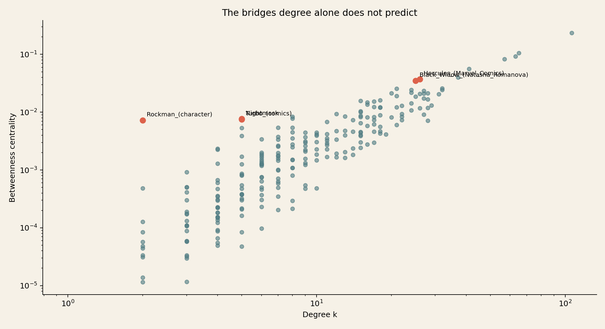

Group exercise 3.12 · Brokers, compared to what
The bridges
degree misses.
Who is surprisingly important in the Marvel network? We keep every character's degree fixed, shuffle the links 200 times, and look for betweenness that cannot be explained by popularity alone.
01 · The question
Popularity is not
control.
Degree asks how many direct connections a character has. Betweenness asks a different question: how often does a character sit on the shortest route between other pairs?
A high-degree character can be popular without being a broker. A low-degree character can control access between parts of the network if removing it forces many routes to go elsewhere.
b(i) = sum over pairs s,t of shortest paths through i / all shortest paths from s to t
Following the Week 3 prompt, we ask: which characters have more betweenness than their degree should produce?
02 · The comparison
Keep degrees.
Move the bridges.
We use the original undirected giant component: 277 characters and 1,421 links. For every null network, we perform successful double-edge swaps. The swaps change who connects to whom, while every character keeps exactly the same degree.
We compute betweenness in the real network and in 200 shuffled networks. For each character, the surprise score is the distance between the real value and the shuffle mean, measured in shuffle standard deviations:
z = (real betweenness - null mean) / null standard deviation
This is a degree-preserving comparison, not a claim that the shuffle is a perfect model of Wikipedia. It answers the narrower question: is this position more broker-like than its degree sequence alone tends to create?
02A · Explore the answer
Find the
bridge.
Choose a character to see its local neighborhood and how unusual its betweenness is against the degree-preserving null. Then choose two characters to trace a shortest chain between them.
Loading the graph data...
Select two characters to find their shortest path.
03 · The result
Rockman is the
smallest big deal.

| Character | Degree | Real betweenness | Null mean | z-score |
|---|---|---|---|---|
| Rockman | 2 | 0.00725 | 0.00023 | +6.88 |
| Turbo | 5 | 0.00751 | 0.00094 | +4.63 |
| Nightmask | 5 | 0.00766 | 0.00090 | +4.44 |
| Hercules | 26 | 0.03738 | 0.01756 | +4.42 |
| Black Widow | 25 | 0.03512 | 0.01602 | +4.39 |
| Black Cat | 28 | 0.00715 | 0.02008 | -2.62 |
The surprise is not Spider-Man. Spider-Man's raw centrality is high, but a hub with a very large degree is expected to lie on many shortest paths. Rockman is different: with only two links, his betweenness is 6.88 shuffle standard deviations above the degree-preserving expectation.
The negative side matters too. Black Cat has 28 links, but her betweenness is below the shuffled expectation. Many of her connections have alternative routes around them, so popularity does not make her a structural bottleneck.
04 · The two-link broker
One door
between worlds.
Rockman's two neighbors are Black Widow and The Witness. That tiny neighborhood is exactly why the result is interesting: Rockman is not influential because he has a large audience. He is influential because his two links connect positions that are otherwise rarely connected in the null networks.
In the real graph, a shortest path between many nodes on opposite sides can pass through this narrow route. In a degree-preserving shuffle, a two-link character usually lands in a less strategically placed pair of neighborhoods, so its betweenness is close to zero.
What do the larger brokers bridge?
Hercules and Black Widow show the same effect at a larger scale. Hercules links a broad set spanning Avengers, cosmic characters, Asgard and Hulk-related characters. Black Widow's neighborhood crosses Avengers, Spider-Man, X-related and villain-linked areas. Their degrees matter, but their positions matter more than degree predicts.
- Rockman · Black Widow · The Witness
- Hercules · Hulk · Spider-Man · Wolverine · Ares · Black Widow
- Black Widow · Hawkeye · Iron Man · Red Guardian · Spider-Man · Wolverine
- Turbo · Darkhawk · Nova · Phil Urich · Rom
05 · What it means
Surprising
is conditional.
The right conclusion is not “Rockman is the most important character.” Betweenness measures control of shortest-path traffic, and our z-score says Rockman's position is unusual given his degree in this graph. That is a precise claim about one measure and one null model.
The network is an undirected projection of Wikipedia hyperlinks, so it does not represent friendship or influence directly. We analyse one frozen snapshot, one connected component and 200 randomised networks. More shuffles would make the null estimate more stable; a different null model could answer a different question.
Week 3's central lesson is therefore also the method: say which question a centrality answers, and say compared to what.
06 · Open the workings
Rerun it.
Question it.
The results and chart were generated from the frozen Week 1 snapshot. The analysis script checks the component size, performs degree-preserving swaps, saves every character's real and null values, and records the source hashes and software versions.
- Week 3 analysis script
- All 277 character centrality comparisons (CSV) · summary and provenance (JSON)
- Original node roster · original directed links
- Reference: Week 3 exercise 3.12 and Compared to what?
AI assistance: the LLM helped formulate and implement the analysis and draft the explanation. The degree-preserving validation, saved results and null comparison are published so the claims can be checked.